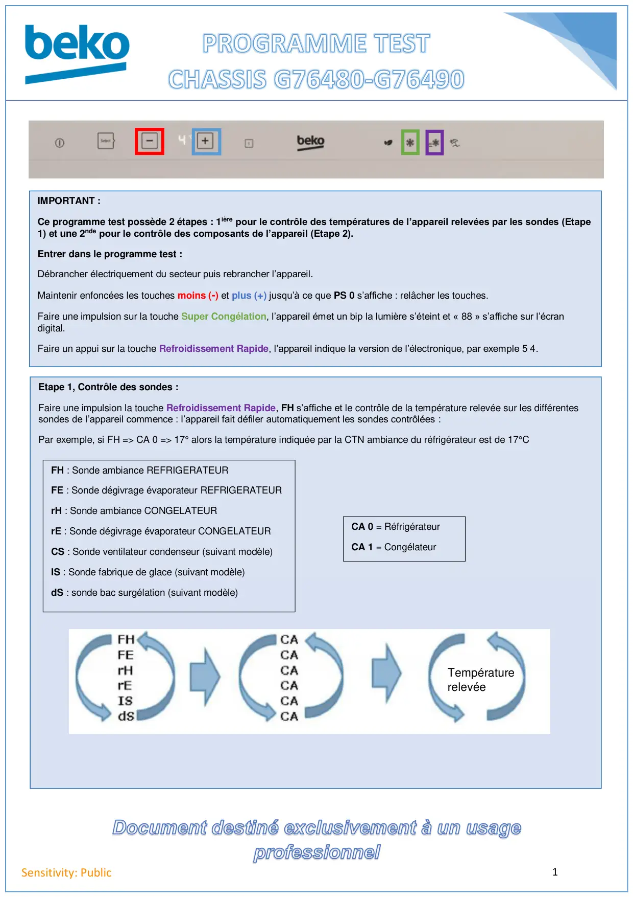
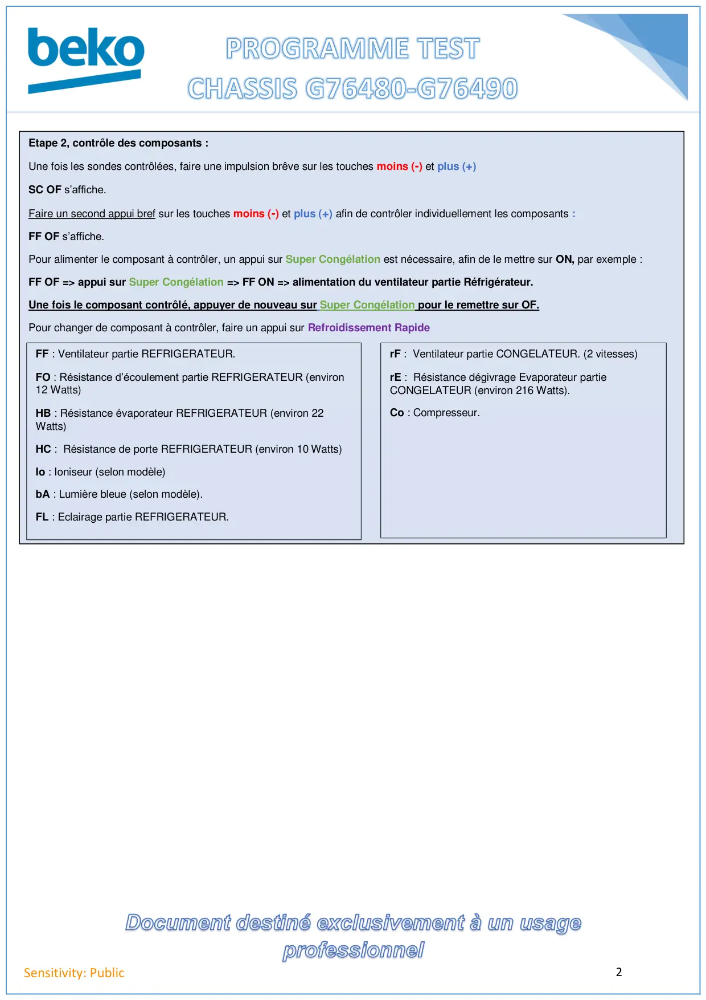

Prog Test REF Electronique Chassis G76480-G76490

1Sensitivity: PublicIMPORTANT :Ce programme test possède 2 étapes : 1ière pour le contrôle des températures de l’appareil relevées par les sondes (Etape1) et une 2nde pour le contrôle des composants de l’appareil (Etape 2).Entrer dans le programme test :Débrancher électriquement du secteur puis rebrancher l’appareil.Maintenir enfoncées les touches moins (-) et plus (+) jusqu’à ce que PS 0 s’affiche : relâcher les touches.Faire une impulsion sur la touche Super Congélation, l’appareil émet un bip la lumière s’éteint et « 88 » s’affiche sur l’écrandigital.Faire un appui sur la touche Refroidissement Rapide, l’appareil indique la version de l’électronique, par exemple 5 4.Etape 1, Contrôle des sondes :Faire une impulsion la touche Refroidissement Rapide, FH s’affiche et le contrôle de la température relevée sur les différentessondes de l’appareil commence : l’appareil fait défiler automatiquement les sondes contrôlées :Par exemple, si FH => CA 0 => 17° alors la température indiquée par la CTN ambiance du réfrigérateur est de 17°CCA 0 = RéfrigérateurCA 1 = CongélateurFH : Sonde ambiance REFRIGERATEURFE : Sonde dégivrage évaporateur REFRIGERATEURrH : Sonde ambiance CONGELATEURrE : Sonde dégivrage évaporateur CONGELATEURCS : Sonde ventilateur condenseur (suivant modèle)IS : Sonde fabrique de glace (suivant modèle)dS : sonde bac surgélation (suivant modèle)Températurerelevée
1 / 2
2Sensitivity: PublicEtape 2, contrôle des composants :Une fois les sondes contrôlées, faire une impulsion brêve sur les touches moins (-) et plus (+)SC OF s’affiche.Faire un second appui bref sur les touches moins (-) et plus (+) afin de contrôler individuellement les composants :FF OF s’affiche.Pour alimenter le composant à contrôler, un appui sur Super Congélation est nécessaire, afin de le mettre sur ON, par exemple :FF OF => appui sur Super Congélation => FF ON => alimentation du ventilateur partie Réfrigérateur.Une fois le composant contrôlé, appuyer de nouveau sur Super Congélation pour le remettre sur OF.Pour changer de composant à contrôler, faire un appui sur Refroidissement RapideFF : Ventilateur partie REFRIGERATEUR.FO : Résistance d’écoulement partie REFRIGERATEUR (environ12 Watts)HB : Résistance évaporateur REFRIGERATEUR (environ 22Watts)HC : Résistance de porte REFRIGERATEUR (environ 10 Watts)Io : Ioniseur (selon modèle)bA : Lumière bleue (selon modèle).FL : Eclairage partie REFRIGERATEUR.rF : Ventilateur partie CONGELATEUR. (2 vitesses)rE : Résistance dégivrage Evaporateur partieCONGELATEUR (environ 216 Watts).Co : Compresseur.
2 / 2